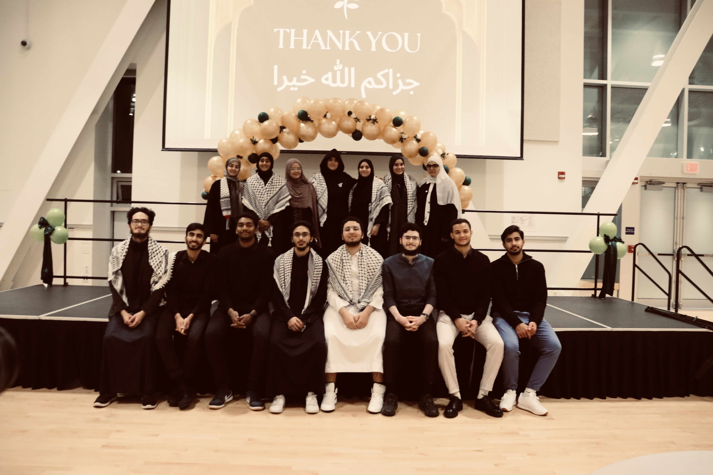

Statistics student at UBC interested in statistical learning, machine learning, and
data-driven research. Passionate about applying quantitative methods to real-world
problems and creating impact through leadership and community engagement.
Grounded in statistical theory and computational methods at one of Canada's leading universities.
Hi, I'm Firila — a Statistics student at the
University of British Columbia with a thematic concentration
in Computer Science, recognized on the Dean's List from 2023W through 2025W.
As an Indonesia Maju Scholarship recipient, I bring a global perspective
to quantitative research — combining statistical rigor with applied data science,
machine learning, and reproducible analysis to address complex, real-world questions.
Beyond coursework, I contribute to research at Indonesia's national science agency,
lead student organizations on campus, and volunteer with international development
organizations — building a portfolio that reflects both intellectual depth and
community commitment.
Thematic concentration in Computer Science. Dean's List honoree (2023W–2025W). Indonesia Maju Scholarship recipient.
Research
BRIN Research Intern
Research Intern at the National Research and Innovation Agency of Indonesia, contributing to applied statistical research and national science initiatives.
Focus
Statistics · ML · Impact
Predictive modeling, NLP, Monte Carlo simulation, time-series forecasting, and data-driven decision support for policy and research.
Technical expertise
PythonRSQLMachine LearningStatistical ModelingNLPTime-SeriesMonte CarloTableauGitReproducible Research
02 · Researcher
Inquiry, analysis & contribution
From national research labs to conference presentations — applying statistics to questions that matter.
InternshipBRIN · Indonesia
Research Intern
National Research and Innovation Agency of Indonesia (BRIN)
Contributed to applied research at Indonesia's premier national science agency,
supporting data-driven investigations and statistical analysis within a multidisciplinary
research environment focused on national innovation priorities.
Applied statistical methods to research datasets
Supported reproducible analysis workflows
Collaborated within a national research institution
ConferencePresenter
Conference Presenter & Contributor
Academic & research forums
Presented research findings and contributed to scholarly discussions,
communicating complex statistical results to academic and professional audiences
with clarity and rigor.
Conference presentations on research topics
Collaborative research contributions
Technical communication to diverse audiences
ProjectSeismic Analysis
Seismic Research Analysis
Statistical modeling · Earthquake parameters
Analyzed seismic data from Türkiye to identify statistical relationships among
earthquake parameters — including magnitude and depth — and assessed the
transferability of observed patterns to the Pacific Northwest context.
End-to-end data science projects with reproducible code — demonstrating applied
machine learning, analytics, and statistical modeling with measurable results.
Developed and compared multiple machine learning classifiers to identify fraudulent
credit card transactions, emphasizing model performance, interpretability, and
practical deployment considerations for highly imbalanced data.
Technologies Used
Pythonscikit-learnXGBoostLightGBMCatBoost
Key Results
Built multiple machine learning models for fraud detection
Conducted large-scale exploratory and business analytics on e-commerce transaction
data to uncover revenue patterns, customer segments, and actionable insights
for marketing and inventory strategy.
Applied natural language processing techniques to classify public sentiment from
social media text data, transforming unstructured tweets into structured insights
for brand and audience analysis.
Vancouver Business Analytics DataQuest Competition
Competed in the UBC DataQuest Competition with a team project analyzing Vancouver
business trends — developing predictive models and data-driven recommendations
that earned first place among participating teams.
Technologies Used
PythonTime Series AnalysisMachine Learning
Key Results
Won 1st Place in the UBC DataQuest Competition
Analyzed Vancouver business trends
Developed predictive models and recommendations
No projects match your search. Try a different keyword or filter.
03 · Leader
Campus leadership & impact
Building community through strategic communication, collaborative teamwork, and
inclusive design — translating leadership into measurable engagement and lasting impact.
Core strengths
Impact-driven leadershipTeam collaborationStrategic communicationCommunity engagementCreative direction
01
Muslim Students Association (MSA) · UBC
Marketing Director
Student Organization
Led marketing and outreach for one of UBC's largest faith-based student organizations —
strengthening community connections through coordinated campaigns, digital presence,
and collaborative event promotion across campus.
Responsibilities
Event promotion
Social media communication
Community engagement
Team collaboration
Impact & skills developed
Coordinated cross-team campaigns that increased event visibility and attendance
Strengthened community belonging through inclusive, consistent messaging
Built communication workflows that aligned marketing with organizational goals
CommunicationTeamworkEvent MarketingCommunity Building
Gallery

02
Association for Women in Mathematics (AWM) · UBC
UI/UX Designer
Women in STEM
Designed digital and print experiences that advance AWM UBC's mission to support
women in mathematics — combining visual design with purposeful communication to
elevate STEM initiatives and foster an inclusive academic community.
Responsibilities
Website support
Design materials
Event support
Women in STEM initiatives
Impact & skills developed
Improved accessibility and clarity of club resources through thoughtful UI/UX design
Created visual materials that amplified women-in-STEM visibility on campus
Collaborated with event teams to deliver cohesive branding across initiatives
Volunteering with organizations dedicated to international development, humanitarian relief,
and youth empowerment — turning compassion into action through meaningful community engagement.
Guiding principles
Service to othersSocial contributionCross-cultural collaborationCommunity empowermentSustainable impact
Organization
International Development and Relief Foundation (IDRF)
Humanitarian & Development
Role
Media Assistant
Assisted with communications, outreach initiatives, and community-focused activities
while collaborating with volunteers from diverse backgrounds at the International
Development and Relief Foundation (IDRF).
Activities
Supported communications and outreach for development initiatives
Assisted with community-focused volunteer activities
Collaborated with volunteers from diverse cultural backgrounds
Contributed to awareness efforts for humanitarian and relief programs
Skills developed
Strengthened cross-cultural communication through global service work
Built teamwork skills coordinating with diverse volunteer groups
Developed media and outreach skills supporting community initiatives
Practiced collaborative problem-solving in community-focused settings
Engaging with Semangat Muda's youth-focused programs to empower young people through
education, mentorship, and civic engagement — fostering the next generation of
community leaders and changemakers.
Activities
Supported youth education and mentorship programs
Participated in community events and civic engagement initiatives
Collaborated with fellow volunteers on social impact projects
Contributed to programs promoting youth leadership and development
Skills developed
Enhanced mentoring and interpersonal communication with youth participants
Strengthened teamwork through collaborative community project delivery
Built organizational skills supporting event logistics and programming
Deepened commitment to social contribution and local community building
"True leadership extends beyond campus walls — it is measured by the positive difference we make in the lives of others through service, collaboration, and sustained social contribution."
Recognition
Honors & achievements
Academic distinction, national scholarships, and competitive excellence —
recognition earned through sustained effort and intellectual curiosity.
Academic Excellence2023W – 2025W
Dean's List
Recognized on the Dean's List at the University of British Columbia for sustained
academic excellence across multiple terms, reflecting consistent high performance
in Statistics coursework.
National ScholarshipMerit Award
Indonesia Maju Scholarship
Recipient of a prestigious national merit-based scholarship supporting outstanding
Indonesian students pursuing higher education abroad — awarded for academic achievement
and leadership potential.
Data Science1st Place
DataQuest Competition
Awarded first place for developing predictive business forecasting models in a
competitive data science challenge — contributing time-series modeling, data cleaning,
and visualization as part of a winning team.
MathematicsCompetition
Mathematics Competition Awards
Earned recognition in mathematics competitions demonstrating strong problem-solving
ability, analytical reasoning, and quantitative aptitude — foundational strengths
that continue to inform my work in statistics and data science.
Curriculum Vitae
Resume & credentials
A comprehensive overview of my academic background, research experience, leadership roles,
technical projects, and community involvement


.png)